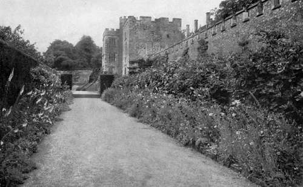

Living Outdoors. Continued
Description
This section is from the book "What England Can Teach Us About Gardening", by Wilhelm Miller. Also available from Amazon: What England Can Teach Us About Gardening.
Living Outdoors. Continued
There is only one other game in England which I think ought to become a universal passion with us and that is lawn bowls, or bowling on the green. Cricket takes too long; fox-hunting requires a leisure class; but bowling on the green meets every requirement of our peculiar conditions. It needs little space, takes little time, does not require a change of clothing or a long journey by train or trolley, is not too violent, as tennis is for elderly people, is not namby-pamby, like croquet, and costs so little that poor men can enjoy it every day of their lives. Its most serious limitation, so far as I know, is that it requires four to play a game, but usually this is not serious, for there are generally plenty of men at a club to start a number of games, and if one has to wait there are plenty of games to watch. Ladies can play it with enjoyment, and without special dress.
Plates 13, 14 and 38 illustrate the charming environment which this game may enjoy without the great cost involved in getting a big tract of land, such as golf, cricket, and base-ball require. Some of the loveliest garden effects I saw in England were bowling greens, and we now have some exquisite examples in America, such as the Larz Anderson green, at Brook-line, Mass., and the Mather green at Ishpeming, Mich., where the resting-place is under a pergola. The ideal bowling green is circular, so that you can change the "crease," or line of play, every day or two and thus keep the green everywhere in perfect order.
LAWN BOWLS, OR BOWLING ON THE GREEN. A GAME THAT REQUIRES LESS TIME AND MONEY THAN GOLF AND IS BOUND TO SPREAD EVERYWHERE IN AMERICA. HERE IT IS BEING PLAYED ON A TENNIS COURT; THE WHITE LINES ARE NOT NECESSARY. See page 28.
THE OLD BOWLING GREEN AT SUTTON PLACE, SURREY, THE HOME OF LORD NORTHCLIFFE, THE FOREMOST PUBLISHER IN THE WORLD. SHOWING HOW EVERY MOMENT OF THE GAME MAY BE MADE FULL OF INTEREST AND BEAUTY BY LINING THE GREEN WITH FLOWERS. See page 28.
STRAIGHT BORDERS IN A FORMAL ENVIRONMENT AT PENSHURST NOW FULL OF CALIFORNIA POPPIES. A FORTNIGHT EARLIER IT WAS FULL OF WHITE FOXGLOVES AND A LAVENDER VARIETY OF SWEET ROCKET. YEW HEDGE ON LEFT, FIGS ON THE WALL. THE CHARM OF SUCH A BORDER IS DUE MORE TO ENVIRONMENT THAN TO INTRINSIC QUALITIES.
THE STRAIGHT, NARROW BORDER AT SUTTON PLACE. See page 40. AT THE RIGHT A CLOUD OF BABY'S BREATH; BELOW IT, A SEA HOLLY; NEXT, THE SHOWY CONEFLOWER (Rudbcckia speciosa.) ABOVE IT, FLAT YELLOW CLUSTERS OF Achillea filipendulina. AT THE CENTRE, PHLOX; AT THE LEFT, Chrysanthemum maximum.
The chief expense in bowls is in maintaining a perfect lawn. A regulation set costs about twelve dollars, including eight bowls, two jacks, and a book of rules. If I were a factory owner I would certainly give my men a chance to play bowls and quoits at noon and night. Many employers in England do this. These games have an immediate effect in cutting out friction and improving the esprit de corps, while the health and efficiency of the workers are slowly but steadily improved. It costs only ten cents to find out whether this game is adapted to your purpose, for there is a little guide book that will tell you all about it. And don't forget that the antics of the weighted ball are always amusing to young and old, so that even if you never become an expert you cannot miss having good exercise and good fun.
But I think we have comparatively little to learn from England about vigorous sports and pastimes. The greatest lesson about outdoor living that she can teach us is the necessity of having a garden. For what we need most is relaxation and there is no way in which we can refresh ourselves for the world's work like living in a garden as the English do. We seem to think that whether a man has a garden or not is a mere incident, or simply a matter of taste. But to an Englishman a garden is as necessary as a dining-room and from the stand-point of national health, it is perhaps quite as necessary to a family as sanitary plumbing. I do not say this because I am a horticulturist, but because we cannot be a pink-cheeked nation until America is one great garden as England is, and until we adopt that splendid English idea — the "week end".
From Saturday noon until Monday morning one half of England is entertaining the other half out of doors. Nothing but routine business is transacted on Saturday and Monday mornings. Indeed, week-end parties often last from Friday night until Tuesday morning, and they enjoy cheaper railroad rates than for the shorter period. I believe that our railroads can, and will, stimulate country living wonderfully by lowering week-end rates. The English railroads advertise bluebell excursions, so that London children may go out and pick these spring flowers. The newspapers always remind people of "Chestnut Sunday," when every one goes out to Bushey Park to see a mile of horse chestnut trees in bloom. Already our railroads are beginning to advertise nature's free shows, such as the autumn colours on the Hudson River, etc. The time will come when nearly all important business will be done by appointment and every one who can afford it will allow himself two or three days a weeks in the country from April till October.
We shall certainly develop an American style in gardening, and I believe that we shall get it largely by pursuing the British idea of comfort, rather than the Italian idea of formalism. These stiff, geometrical gardens which are dominated by architecture are only for show. They are frightfully expensive and not enough "fun." Marble benches are mighty cold and hard to sit on. You can't linger lovingly on a hot day over an Italian well curb with no water in it. The endless steps are tiresome. The glare of white stone makes the eyes ache. A hard-working, democratic people wants fun and comfort. Flowers are more "fun" than brick and stone because they grow, change, bend before the wind, and show wonderful form, colour, and fragrance. And we need comfort even more than the Europeans, because our climate is harder and we work harder.
The two greatest comforts every American garden can have are a summer house and an arbour. I would have an arbour for grapes, because the grape is the easiest fruit to grow. No other vine, tree, or bush will bear every year and last a hundred years. It is probably the oldest plant cultivated by man, and therefore an important element in producing "charm." So, even in the largest flower gardens, I would have some sort of grape, wild or cultivated, for the fragrance of its bloom and the old memories that are stirred by this lovely leaf-form. But the practical reason why an arbour or pergola will be an essential feature of the American garden is that it provides coolness and shade, which are so essential in our hot climate. The aesthetic reason for it is that it breaks up a garden into many little pictures and provides the best possible frames for them. I wish every garden-planner could see Mr. Breese's old-fashioned flower garden at Southampton, L. I. A pergola runs around three sides of the garden, so that there is always a cool and shady walk from which one may view the flowers. There is a new kind of vine every few posts and a new picture every step or two.
The only drawback to the arbour or pergola is that it does not protect one from the rain. It is very pleasant to be outdoors during a gentle shower and enjoy the burst of bird song after the rain stops — provided one has a tight roof overhead. In England there are likely to be several gentle showers every day and consequently the tight-roofed summer house is a well-developed institution. But I believe we can improve on England by making the summer house a real centre of outdoor life — having a place for dishes, a place for books, a place to write letters of friendship— even a place to sleep. Indeed, the outdoor sleeping movement is growing faster here, I believe, than in England. We are building houses especially for it and have perfected a device for which rich and poor may enjoy it even in the centres of our largest cities.
There are a great many delightful features of English outdoor life that I should like to dwell upon, such as the band concerts, flower shows, historical pageants, the swans on the Thames, and ornamental water-fowl on private estates, the mazes which amuse the children, the protection of song birds, the rearing of pheasant, grouse, and quail the foot-paths, the local guides everywhere for the wheelman and pedestrian, the way-side inns and their charming gardens that bear the sign of the automobile association's approval, and the column in the newspaper about the delights of the country, not forgetting even the bryony of the hedgerows and the momentous question that agitates the nation every Friday — the weather prospect for the week-end.
But all these things will come in time. We need not worry about America's never becoming as charming as England. A thousand years will attend to that. Meanwhile, the important thing on which we all can and ought to concentrate is this: to have a garden and really live in it. We must learn how to relax, how to eat properly and how to enjoy life more. All these things will come easily and naturally if we get the week-end habit and spend two sevenths of the week visiting people in their homes or entertaining them in ours. And here is a "check list" for immediate reforms: Do you play golf or bowl? Have you a garden, a screened veranda, a summer house, an arbour, and provision for outdoor sleeping ?
DOUBLE BORDERS {See page 41). THE MOST CHARMING ENGLISH BORDERS LIE ON EACH SIDE OF A BROAD GRASSWALK CONNECTING ONE PART OF AN ESTATE WITH ANOTHER.
THE FAMOUS LAKE AT KEW, WHICH ARTISTS LOVE TO PAINT, SHOWING THAT THE ENGLISH LIKE AMERICAN PLANTS MORE THAN WE DO. EVERY PLANT HERE IS AMERICAN, OR ELSE AN ENGLISH PLANT FOR WHICH WE HAVE THE EQUIVALENT. See page 48.
ANOTHER VIEW OF THE LAKE AT KEW, SHOWING THE RIGHT WAY TO USE THE LOMBARDY POPLAR, THE MOST ABUSED TREE IN AMERICA. See page 47.
'"THE NOBLEST IDEA IN WATER GARDENING IS THE NATURALIZING OF WATER LILIES." A GLIMPSE OF MR. WILLIAM ROBINSON'S COMPLETE COLLECTION OF HARDY WATER LILIES AT GRAVETYE, SUSSEX. IMAGINE THESE PLANTS STUDDED WITH GLORIOUS FLOWERS IN YELLOW, ROSE, RED, AND WHITE. See page 47.
Continue to:
Tags
garden, flowers, plants, England, effects, foliage, gardening